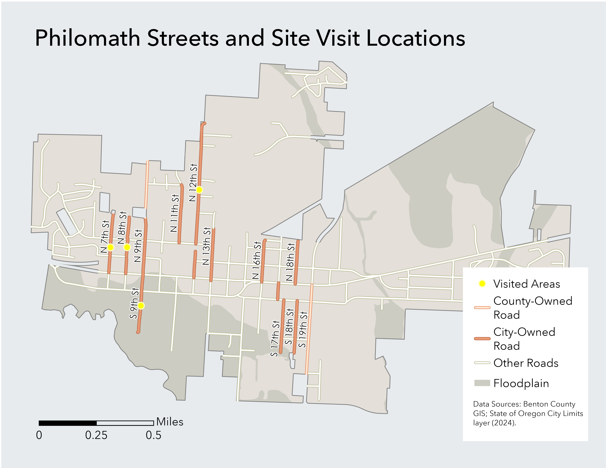

GIS · URBAN TRANSPORTATION · COMMUNITY
Philomath Streets and Site Visit Locations.
Created for my Urban Transportation class after a Sustainable City Year Program visit to Philomath, this map documents underdeveloped streets and potential ways to improve them.

project
I mapped site visits and underdeveloped streets, showing city and county road ownership, other roads, floodplain areas, and locations for closer review.
data
Benton County GIS and the State of Oregon city limits layer (2024).
tools
ArcGIS Pro · GIS mapping · Cartographic design